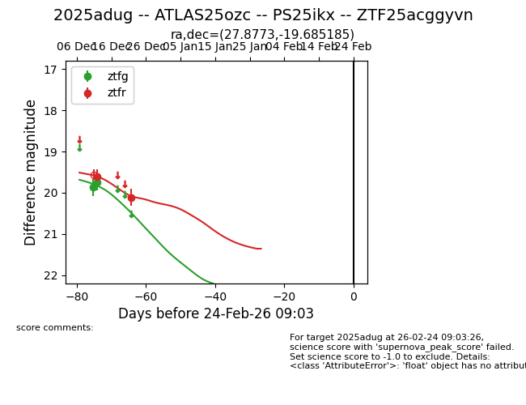
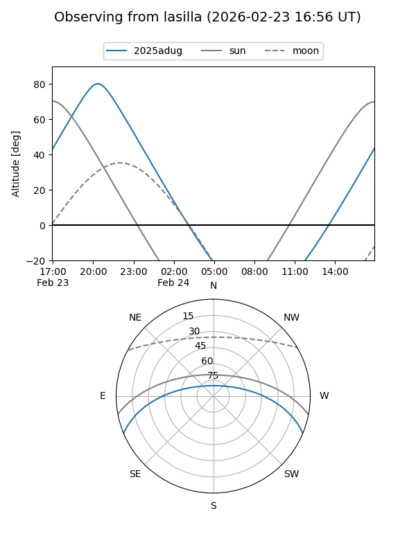
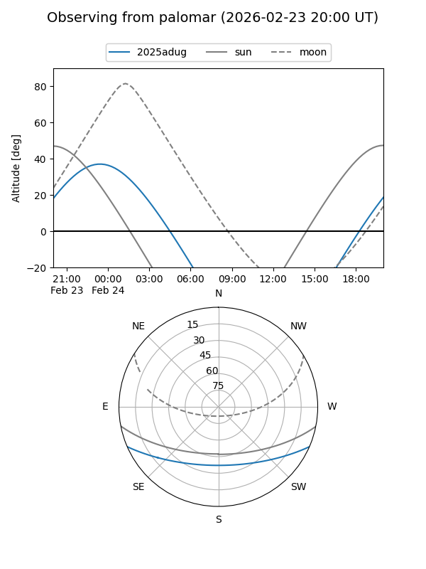
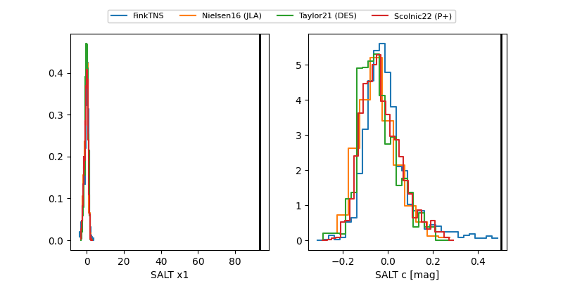

2025adug
Target 2025adug at 2025-12-18 11:18
Aliases and brokers:
FINK: fink-portal.org/ZTF25acggyvn
Lasair: lasair-ztf.lsst.ac.uk/objects/ZTF25acggyvn
ALeRCE: alerce.online/object/ZTF25acggyvn
TNS: wis-tns.org/object/2025adug
YSE: ziggy.ucolick.org/yse/transient_detail/2025adug
alt names
ZTF25acggyvn (ztf,fink_ztf)
2025adug (tns,yse)
PS25ikx (panstarrs)
Coordinates:
equatorial (ra, dec) = 27.8773,-19.68519
equatorial (HMS+DMS) = 01:51:30.54,-19:41:06.67
galactic (l, b) = (187.7183,-74.35549)
Photometry
last ztfg=19.75, ztfr=19.61
2 ztfg, 1 ztfr detections
Lightcurve

Visibility


Additional plots
